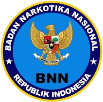
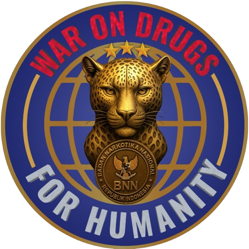

☑️
Presensi Kehadiran
Isi daftar hadir sesuai tanggal pelaksanaan kegiatan.
Isi Presensi Kehadiran ↗

Direktorat Pascarehabilitasi
Deputi Bidang Rehabilitasi
Badan Narkotika Nasional
Pilih menu untuk mengakses layanan kegiatan
Isi daftar hadir sesuai tanggal pelaksanaan kegiatan.
Isi Presensi Kehadiran ↗Bergabung ke ruang pertemuan daring kegiatan IKR.
Join Virtual Meeting ↗Unduh latar belakang resmi BNN untuk pertemuan daring.
Unduh Virtual Background ↗Materi dapat diunduh setelah kegiatan selesai.
Unduh Materi Kegiatan ↗